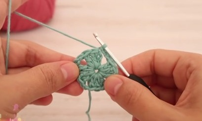

Aprendamos a tejer: Granny Square
El Granny Square es un pilar del crochet que todo crochetero debe saber hacer y consiste en un cuadradito que crece desde el centro, vuelta tras vuelta y nos permite hacer miles de cosas. Podemos hacer bolsos, bufandas, accesorios, colchas… eso es lo lindo de los Grannys, que mezclando materiales y tamaños podemos lograr cosas impresionantes, así que vamos a ver el tutorial.

Empezaremos nuestro granny básico con un nudo deslizado (o corredizo) y aquí vamos a hacer cuatro cadenas. Vamos a unir la última y la primera cadena haciendo un punto deslizado en la primera cadena y aquí ya tenemos el aro central alrededor del cual va a crecer nuestro Granny. Vamos a hacer ahora tres cadenas, estas cadenas nos van a valer como un punto alto y ahora en el aro central vamos a hacer dos puntos altos. Ahora vamos a hacer dos cadenas y de nuevo en el aro central vamos a hacer 3 puntos altos. Los tres puntos altos tejidos en el mismo agujero es lo que vamos a llamar de ahora en adelante un grupo. Ahora vamos a repetir esta secuencia: vamos a hacer dos cadenas y de nuevo un grupo, es decir tres puntos altos en el mismo agujero. Ya teniendo el tercer grupo y repetimos de nuevo la secuencia dos cadenas y un grupo. Tenemos ahora cuatro grupos. Para terminar hacemos dos cadenas y conectamos con la tercera cadena del principio, ahí vamos a hacer un punto deslizado para cerrar ya nuestra primera vuelta que debe quedar así como un cuadradito:
Podemos cortar éste color, retirarlo y el nuevo color lo vamos a traer siempre en las esquinas.
Traigo mi nuevo color y con él hago tres cadenas. Así siempre vamos a empezar las vueltas y en el mismo agujero vamos a hacer dos puntos altos para completar el primer grupo. Ahora vamos a hacer dos cadenas y en este mismo agujero vamos a hacer otro grupo de tres puntos altos ahí en el mismo lugar. Ahora voy a saltar al siguiente agujero (a la siguiente esquina) donde voy a hacer otra esquina. Vamos a hacer un grupo de tres puntos altos en ese agujero después dos cadenas y después otro grupo en ese mismo agujero. Así vamos a trabajar siempre las esquinas. Entonces voy a saltar a la siguiente esquina donde vuelvo a trabajar lo mismo. Y así sigo trabajando hasta terminar la vuelta. Cuando ya hagamos la última esquina conectamos con la tercera cadena del principio y hacemos un punto deslizado para cerrar nuestra segunda vuelta, que ya debe quedar así:
Vamos a cortar el hilo, retirar este color y recuerden que los nuevos colores siempre se traen en las esquinas. Traigo el nuevo color y siempre empezamos igual: 3 cadenas 2 puntos altos dos cadenas y otro grupo en el mismo agujero para completar mi esquina. Ahora vamos a ver que los costados van a haber unos agujeros de la vuelta anterior. En esos agujeros siempre vamos a hacer un grupo (tres puntos altos en ese agujero del costado) y de nuevo pasamos a una esquina donde trabajamos una esquina. Y así seguimos repitiendo la secuencia: un grupo en el costado, una esquina en la esquina, hasta dar toda la vuelta cuando vemos toda la vuelta conectamos con un punto deslizado en la tercera cadena y ya terminamos nuestra tercera vuelta.
Ahora vamos a trabajar la cuarta vuelta que sería básicamente lo mismo: insertamos el nuevo color en cualquiera de las esquinas y con él hacemos tres cadenas y luego hacemos dos puntos altos en esa misma esquina para terminar este primer grupo y hacemos dos cadenas y un grupo en el mismo agujero para completar ya la primera esquina de la nueva vuelta. Pasamos a trabajar en los costados que vamos a ver que siempre van a tener un agujerito más que la vuelta anterior (aquí 2, en la siguiente 3, en la siguiente 4, etc.) y siempre los trabajamos igual: un grupo en cada agujero. No importa si tenemos dos agujeros como aquí o diez agujeros porque ya llevamos muchas vueltas, siempre hacemos un grupo en cada agujero que vayamos encontrando. Sigo trabajando en la misma secuencia hasta dar toda la vuelta, cierro con punto deslizado, retiro el color y ya sólo nos queda decidir cuándo parar según el tamaño que queramos darle a nuestro Granny.